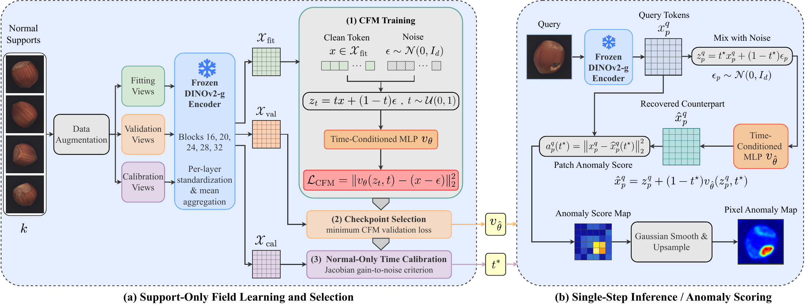
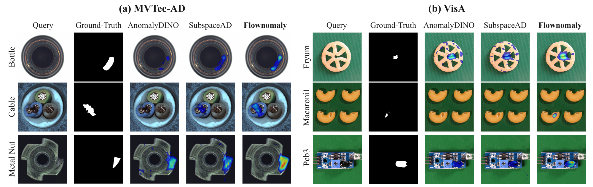

Overview
Flownomaly detects and localizes industrial anomalies from only a few normal support images. It learns a category-specific conditional flow-matching field in frozen DINOv2 feature space and uses a single recovery step to estimate a query token's normal counterpart. The squared recovery residual provides the anomaly signal.
A normal-only Jacobian gain-to-noise (JGN) criterion selects the operating time using normal calibration views. At inference, the method requires just one evaluation of the learned field, without trajectory integration.

Results
Flownomaly is evaluated on MVTec-AD, VisA, and Real-IAD. The table shows one-shot AUROC percentages, reported as mean ± standard deviation over three seeds after averaging across categories.
| Dataset | Normal support per category | Image AUROC | Pixel AUROC |
|---|---|---|---|
| MVTec-AD | 1 image | 97.8 ± 0.9 | 98.0 ± 0.1 |
| VisA | 1 image | 95.3 ± 0.7 | 98.7 ± 0.0 |
| Real-IAD | 1 sample (5 views) | 88.2 ± 0.2 | 99.2 ± 0.0 |
Real-IAD uses sample-shot support, with detection evaluated per image. Results for 2- and 4-shot settings are available in the paper and repository.

Citation
If you find this work useful, please consider citing the paper:
@article{ribeiro2026flownomaly,
title={Flownomaly: Single-Step Conditional-Mean Recovery for Few-Shot Anomaly Detection},
author={Ribeiro, Bernardo Perrone and Akdag, Erkut and Bondarev, Egor},
journal={arXiv preprint arXiv:2610.32964},
year={2026}
}